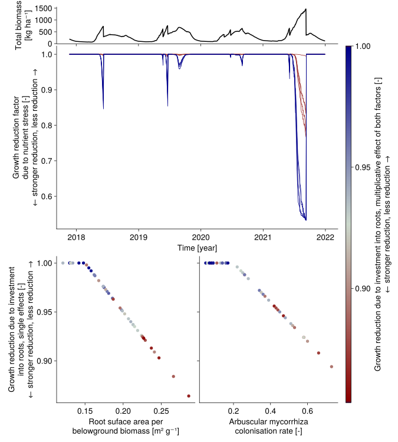

Influence of intermediate variables
Trade-off between investing in roots and experiencing nutrient stress
- plants with a high investment into roots have a low aboveground biomass per total biomass, a high arbuscular mycorrhizal colonisation rate, and a high root surface area per belowground biomass
- $\rightarrow$ low growth reduction due to nutrient stress
- $\rightarrow$ investment costs energy, this is implemented by a growth reducer that is independent of the nutrient level
- nutrient stress is stronger if the total biomass is high
show code
using CairoMakie
using Unitful
import GrasslandTraitSim as sim
let
trait_input = sim.input_traits();
input_obj = sim.validation_input(; plotID = "HEG01", nspecies = 43, time_step_days = 1);
p = sim.SimulationParameter()
sol = sim.solve_prob(; input_obj, p, trait_input);
t = sol.simp.mean_input_date_num
t_out = sol.simp.output_date_num
total_biomass = ustrip.(vec(sol.output.biomass[:, 1, 1, :] * (1 ./ sol.traits.abp)))
axis = (width = 900, height = 300)
fig = Figure()
Axis(fig[1, 1:2]; axis..., xticklabelsvisible = false, xticksvisible = true,
xticks = 2006:2:2022, ylabel = "Total biomass [kg ha⁻¹]")
lines!(t_out, total_biomass;
linewidth = 3, color = :black)
colorrange = (minimum(sol.output.root_invest), maximum(sol.output.root_invest))
color_vals = vec(sol.output.root_invest)
colormap = :viridis
Axis(fig[2, 1:2]; axis..., xticks = 2006:2:2022,
ylabel = "Growth reduction factor\ndue to nutrient stress [-]\n← stronger reduction, less reduction →")
for s in 1:sol.simp.nspecies
lines!(t, vec(sol.output.nutrient_growth[:, 1, 1, s]); colorrange,
colormap, color = color_vals[s], linewidth = 0.5)
end
Axis(fig[3, 1]; height = 300, width = 450,
xlabel = "Aboveground biomass per total biomass [-]",
ylabel = "Arbuscular mycorrhizal colonisation rate [-]")
scatter!(sol.traits.abp, sol.traits.amc,
color = color_vals,
markersize = 30)
Axis(fig[3, 2]; height = 300, width = 450,
xlabel = "Aboveground biomass per total biomass [-]",
ylabel = "Root suface area [m² g⁻¹]")
scatter!(sol.traits.abp, ustrip.(sol.traits.rsa),
color = color_vals,
markersize = 30)
Colorbar(fig[2:3, 3]; colorrange, colormap,
label = "Growth reduction due to investment into roots [-]")
rowgap!(fig.layout, 1, 10)
rowgap!(fig.layout, 2, 10)
resize_to_layout!(fig)
fig
end
Trade-off between investing in roots and experiencing water stress
show code
using CairoMakie
using Unitful
import GrasslandTraitSim as sim
let
trait_input = sim.input_traits();
input_obj = sim.validation_input(; plotID = "HEG01", nspecies = 43, time_step_days = 1);
p = sim.SimulationParameter()
sol = sim.solve_prob(; input_obj, p, trait_input);
t = sol.simp.mean_input_date_num
t_out = sol.simp.output_date_num
total_biomass = ustrip.(vec(sol.output.biomass[:, 1, 1, :] * (1 ./ sol.traits.abp)))
axis = (width = 900, height = 300)
fig = Figure()
Axis(fig[1, 1:2]; axis..., xticklabelsvisible = false, xticksvisible = true,
xticks = 2006:2:2022, ylabel = "Total biomass [kg ha⁻¹]")
lines!(1:10)
resize_to_layout!(fig)
fig
end![](data:image/png;base64, iVBORw0KGgoAAAANSUhEUgAABLAAAAKYCAIAAADsbJb5AAAABmJLR0QA/wD/AP+gvaeTAAAVF0lEQVR4nO3bvW4c5xmG4V3SgNIoQKxCWFexepl1CusgZDBHkrMirCYIkFo+AlpFUsmdGRqQixABwiAMU0gYiRS53J+Z+X6e66qneNsbzzfL6+vrBQAAAHkOSh8AAABAGYIQAAAglCAEAAAIJQgBAABCCUIAAIBQghAAACCUIAQAAAglCAEAAEIJQgAAgFCCEAAAIJQgBAAACCUIAQAAQglCAACAUIIQAAAglCAEAAAIJQgBAABCCUIAAIBQghAAACCUIAQAAAglCAEAAEIJQgAAgFCCEAAAIJQgBAAACCUIAQAAQglCAACAUIIQAAAglCAEAAAIJQgBAABCCUIAAIBQghAAACCUIAQAAAglCAEAAEIJQgAAgFCCEAAAIJQgBAAACCUIAQAAQglCAACAUIIQAAAglCAEAAAIJQgBAABCCUIAAIBQghAAACCUIAQAAAglCAEAAEIJQgAAgFCCEAAAIJQgBAAACCUIAQAAQglCAACAUIIQAAAglCAEAAAIJQgBAABCCUIAAIBQghAAACCUIAQAAAglCAEAAEIJQgAAgFCCEAAAIJQgBAAACCUIAQAAQglCAACAUIIQAAAglCAEAAAIJQgBAABCCUIAAIBQghAAACCUIAQAAAglCAEAAEIJQgAAgFCCEAAAIJQgBAAACCUIAQAAQglCAACAUIIQAAAglCAEAAAIJQgBAABCCUIAAIBQghAAACCUIAQAAAglCAEAAEIJQgAAgFCCEAAAIJQgBAAACCUIAQAAQglCAACAUIIQAAAglCAEAAAIJQgBAABCCUIAAIBQghAAACCUIAQAAAglCAEAAEIJQgAAgFCCEAAAIJQgBAAACCUIAQAAQglCAACAUIIQAAAglCAEAAAIJQgBAABCCUIAAIBQghAAACCUIAQAAAglCAEAAEIJQgAAgFCCEAAAIJQgBAAACCUIAQAAQglCAACAUIIQAAAglCAEAAAIJQgBAABCCUIAAIBQghAAACCUIAQAAAglCAEAAEIJQgAAgFCCEAAAIJQgBAAACCUIAQAAQglCAACAUIIQAAAglCAEAAAIJQgBAABCCUIAAIBQghAAACCUIAQAAAglCAEAAEIJQgAAgFCCEAAAIJQgBAAACCUIAQAAQglCAACAUIIQAAAglCAEAAAIJQgBAABCCUIAAIBQghAAACCUIAQAAAglCAEAAEIJQgAAgFCCEAAAIJQgBAAACCUIAQAAQglCAACAUIIQAAAglCAEAAAIJQgBAABCfVH6AAAAAGZ1fnH56s3ZyemZIAQAAIjw7l//+cvffjk5/fmvf//lv/+7XlgIAQAA+vZ5Bw4EIQAAQIeGd6Gv3767utmBhwfLF8+eHB+tBCEAAEA/1uyBB8vlH37/u+Oj1R+Pvlr99jcLCyEAAEAHturAgSAEAABo1W4dOBCEAAAAjdmzAweCEAAAoA1jdeBAEAIAAFRt9A4cCEIAAIAaTdeBA0EIAABQkRk6cCAIAQAAypuzAweCEAAAoJgiHTgQhAAAAHMr24EDQQgAADCTSjpwIAgBAACmVVsHDgQhAADAJKrtwIEgBAAAGFP9HTgQhAAAACNoqAMHghAAAGB3LXbgQBACAABsrekOHAhCAACATfXRgQNBCAAA8IDOOnAgCAEAAO7WawcOBCEAAMAN3XfgQBACAAAsFkkdOBCEAABAtMAOHAhCAAAgUXIHDgQhAAAQRAd+ShACAAD9O7+4fPXm7OT07PXbd1c3O/DwYPni2ZPjo9XL56unjx+VurAIQQgAAHRLB64nCAEAgN7owA0JQgAAoBP+D9yWIAQAANqmA3cmCAEAgCbpwP0JQgAAoCU6cESCEAAAaIAOnIIgBAAA6qUDJyUIAQCA6ujAeQhCAACgFjpwZoIQAAAoTAeWIggBAIAydGBxghAAAJiVDqyHIAQAAOagAyskCAEAgAnpwJoJQgAAYHw6sAmCEAAAGI0ObIsgBAAA9qUDGyUIAQCAHenA1glCAABgOzqwG4IQAADYiA7sjyAEAADW0YEdE4QAAMAddGACQQgAAHykA6MIQgAAQAeGEoQAAJBLB4YThAAAEEcH8p4gBACAFDqQWwQhAAB0TgdyH0EIAAB90oE8SBACAEBXdCCbE4QAANADHcgOBCEAADRMB7IPQQgAAO3RgYxCEAIAQDN0IOMShAAAUDsdyEQEIQAAVEoHMjVBCAAAddGBzEYQAgBAFXQg8xOEAABQkg6kIEEIAAAF6EBqIAgBAGA+OpCqCEIAAJicDqROghAAAKaiA6mcIAQAgJHpQFohCAEAYBw6kOYIQgAA2IsOpF2CEAAAdqED6YAgBACALehAeiIIAQDgYTqQLglCAAC4lw6kb4IQAABu04GEEIQAAPCBDiSNIAQAIJ0OJJYgBAAglA4EQQgAQBYdCANBCABABB0InxOEAAD0TAfCGoIQAIAO6UDYhCAEAKAf5xeX3/94dnL68w8//Xp1swMPD5Yvnj05Plq9fL56+vhRqQuhKoIQAIDm2QNhN4IQAIBW2QNhT4IQAIDG6EAYiyAEAKAN3oXC6AQhAABV04EwHUEIAECNdCDMQBACAFARHQhzEoQAAJSnA6EIQQgAQDE6EMoShAAAzE0HQiUEIQAAM9GBUBtBCADAtHQgVEsQAgAwCR0I9ROEAACMSQdCQwQhAAAj0IHQIkEIAMDudCA0TRACALA1HQh9EIQAAGxKB0JnBCEAAA/QgdArQQgAwN10IHRPEAIAcIMOhByCEACAxUIHQiRBCAAQTQdCMkEIAJBIBwILQQgAEEUHAp8ShAAA/dOBwJ0EIQBAt3QgsJ4gBADojQ4ENiQIAQA6oQOBbQlCAIC26UBgZ4IQAKBJOhDYnyAEAGiJDgRGJAgBABqgA4EpCEIAgHrpQGBSghAAoDo6EJiHIAQAqIUOBGYmCAEACtOBQCmCEACgDB0IFCcIAQBmpQOBeghCAIA56ECgQoIQAGBCOhComSAEABifDgSaIAgBAEajA4G2CEIAgH3pQKBRghAAYEc6EGidIAQA2I4OBLohCAEANqIDgf4IQgCAdXQg0DFBCABwBx0IJBCEAAAf6UAgiiAEANCBQChBCADk0oFAOEEIAMTRgQDvCUIAIIUOBLhFEAIAndOBAPcRhABAn3QgwIMEIQDQFR0IsDlBCAD0QAcC7EAQAgAN04EA+xCEAEB7dCDAKAQhANCM84vL7388Ozn9+Yeffr262YGHB8sXz54cH61ePl89ffyo1IUAbRGEAEDtdCDARAQhAFAp70IBpiYIAYC62AMBZiMIAYAq2AMB5icIAYCSdCBAQYIQAChABwLUQBACAPPRgQBVEYQAwOR0IECdBCEAMBUdCFA5QQgAjEwHArRCEAIA49CBAM0RhADAXnQgQLsEIQCwCx0I0AFBCABsQQcC9EQQAgAP04EAXRKEAMC9dCBA3wQhAHCbDgQIIQgBgA90IEAaQQgA6XQgQCxBCAChdCAAghAAsuhAAAaCEAAi6EAAPicIAaBnOhCANQQhAHRIBwKwCUEIAP3QgQBsRRACQPN0IAC7EYQA0CodCMCeBCEANEYHAjAWQQgAbdCBAIxOEAJA1XQgANMRhABQIx0IwAwEIQBURAcCMCdBCADl6UAAihCEAFCMDgSgLEEIAHPTgQBUQhACwEx0IAC1EYQAMC0dCEC1BCEATEIHAlA/QQgAY9KBADREEALACHQgAC0ShACwOx0IQNMEIQBsTQcC0AdBCACb0oEAdEYQAsADdCAAvRKEAHA3HQhA9wQhANygAwHIIQgBYLHQgQBEEoQARNOBACQThAAk0oEAsBCEAETRgQDwKUEIQP90IADcSRAC0C0dCADrCUIAeqMDAWBDghCATuhAANiWIASgbToQAHYmCAFokg4EgP0JQgBaogMBYESCEIAG6EAAmIIgBKBeOhAAJiUIAajO+cXlqzdnJ6dnr9++u7rZgYcHy2+//vL46Kvvvlk9ffyo1IUA0AdBCEAt7IEAMDNBCEBh9kAAKEUQAlCGDgSA4gQhALPyLhQA6iEIAZiDDgSACglCACakAwGgZoIQgPHpQABogiAEYDQ6EADaIggB2JcOBIBGCUIAdqQDAaB1ghCA7ehAAOiGIARgIzoQAPojCAFYRwcCQMcEIQB30IEAkEAQAvCRDgSAKIIQAB0IAKEEIUAuHQgA4QQhQBwdCAC8JwgBUuhAAOAWQQjQOR0IANxHEAL0SQcCAA8ShABd0YEAwOYEIUAPdCAAsANBCNAwHQgA7EMQArRHBwIAoxCEAM3QgQDAuAQhQO10IAAwEUEIUCkdCABMTRAC1EUHAgCzEYQAVdCBAMD8BCFASToQAChIEAIUoAMBgBoIQoD56EAAoCqCEGByOhAAqJMgBJiKDgQAKicIAUamAwGAVghCgHHoQACgOYIQYC86EABolyAE2IUOBAA6IAgBtqADAYCeCEKAh+lAAKBLghDgXjoQAOibIAS4TQcCACEEIcAHOhAASCMIgXQ6EACIJQiBUDoQAEAQAll0IADAQBACEXQgAMDnBCHQMx0IALCGIAQ6pAMBADYhCIF+6EAAgK0IQqB5OhAAYDeCEGiVDgQA2JMgBBqjAwEAxiIIgTboQACA0QlCoGo6EABgOoIQqJEOBACYgSAEKqIDAQDmJAiB8nQgAEARghAoRgcCAJQlCIG5nV9cvnpzdnJ69vrtu6ubHXh4sPz26y+Pj7767pvV08ePSl0IABBCEAIz0YEAALURhMC0vAsFAKiWIAQmYQ8EAKifIATGZA8EAGiIIARGoAMBAFokCIHd6UAAgKYJQmBrOhAAoA+CENiUDgQA6IwgBB6gAwEAeiUIgbvpQACA7glC4AYdCACQQxACi4UOBACIJAghmg4EAEgmCCGRDgQAYCEIIYoOBADgU4IQ+qcDAQC4kyCEbulAAADWE4TQGx0IAMCGBCF0QgcCALAtQQht04EAAOxMEEKTdCAAAPsThNASHQgAwIgEITRABwIAMAVBCPXSgQAATEoQQnV0IAAA8xCEUAsdCADAzAQhFKYDAQAoRRBCGToQAIDiBCHMSgcCAFAPQQhz0IEAAFRIEMKEdCAAADUThDA+HQgAQBMEIYxGBwIA0BZBCPvSgQAANEoQwo50IAAArROEsB0dCABANwQhbEQHAgDQH0EI6+hAAAA6JgjhDjoQAIAEghA+0oEAAEQRhKADAQAIJQjJpQMBAAgnCImjAwEA4D1BSAodCAAAtwhCOqcDAQDgPoKQPulAAAB4kCCkKzoQAAA2JwjpgQ4EAIAdCEIapgMBAGAfgpD26EAAABiFIKQZOhAAAMYlCKmdDgQAgIkIQiqlAwEAYGqCkLroQAAAmI0gpAo6EAAA5icIKUkHAgBAQYKQAnQgAADUQBAyHx0IAABVEYRMTgcCAECdBCFT0YEAAFA5QcjIzi8uX705Ozk9e/323dXNDjw8WL549uT4aPXy+erp40elLgQAAN4ThIxDBwIAQHMEIXvRgQAA0C5ByC78HwgAAB0QhGxBBwIAQE8EIQ/TgQAA0CVByL10IAAA9E0QcpsOBACAEIKQD3QgAACkEYTpdCAAAMQShKF0IAAAIAiz6EAAAGAgCCPoQAAA4HOCsGc6EAAAWEMQdkgHAgAAmxCE/dCBAADAVgRh83QgAACwG0HYKh0IAADsSRA2RgcCAABjEYRt0IEAAMDoBGHVdCAAADAdQVgjHQgAAMxAEFZEBwIAAHMShOXpQAAAoAhBWIwOBAAAyhKEc9OBAABAJQThTHQgAABQG0E4LR0IAABUSxBOQgcCAAD1E4Rj0oEAAEBDBOEIdCAAANAiQbg7HQgAADRNEG5NBwIAAH0QhJvSgQAAQGcE4QN0IAAA0CtBeDcdCAAAdE8Q3qADAQCAHIJwsdCBAABApOgg1IEAAECyxCDUgQAAAIuoINSBAAAAn+o/CHUgAADAnboNQh0IAACwXm9BqAMBAAA21EkQ6kAAAIBttR2EOhAAAGBnTQahDgQAANhfS0GoAwEAAEbUQBDqQAAAgCnUG4Q6EAAAYFLVBaEOBAAAmEctQagDAQAAZlY4CHUgAABAKWWCUAcCAAAUN2sQ6kAAAIB6zBGEOhAAAKBCEwahDgQAAKjZ+EGoAwEAAJowWhDqQAAAgLbsG4Q6EAAAoFE7BuH5xeWrN2cnp2ev3767utmBhwfLF8+eHB+tXj5fPX38aIwjAQAAGN92QWgPBAAA6MZGQWgPBAAA6M+6INSBAAAAHbsjCL0LBQAASPAxCHUgAABAlC90IAAAQKbl4Z/+7P9AAACAQF8MNWgPBAAAiPKFDgQAAMi0/Mc//+1dKAAAQKDl9fX1w18BAADQnYPSBwAAAFCGIAQAAAglCAEAAEIJQgAAgFCCEAAAIJQgBAAACCUIAQAAQglCAACAUIIQAAAglCAEAAAIJQgBAABCCUIAAIBQghAAACCUIAQAAAglCAEAAEIJQgAAgFCCEAAAIJQgBAAACCUIAQAAQglCAACAUIIQAAAglCAEAAAIJQgBAABCCUIAAIBQghAAACCUIAQAAAglCAEAAEIJQgAAgFCCEAAAIJQgBAAACCUIAQAAQglCAACAUIIQAAAglCAEAAAIJQgBAABCCUIAAIBQghAAACCUIAQAAAglCAEAAEIJQgAAgFCCEAAAIJQgBAAACCUIAQAAQglCAACAUIIQAAAglCAEAAAIJQgBAABCCUIAAIBQghAAACCUIAQAAAglCAEAAEIJQgAAgFCCEAAAIJQgBAAACCUIAQAAQglCAACAUIIQAAAglCAEAAAIJQgBAABCCUIAAIBQghAAACCUIAQAAAglCAEAAEIJQgAAgFCCEAAAIJQgBAAACCUIAQAAQglCAACAUIIQAAAglCAEAAAIJQgBAABCCUIAAIBQghAAACCUIAQAAAglCAEAAEIJQgAAgFCCEAAAAAAAAAAAAKB7y+vr69I3AAAAUIB/CAEAAEIJQgAAgFCCEAAAIJQgBAAACCUIAQAAQglCAACAUIIQAAAglCAEAAAIJQgBAABCCUIAAIBQghAAACCUIAQAAAglCAEAAEIJQgAAgFCCEAAAIJQgBAAACCUIAQAAQglCAACAUIIQAAAglCAEAAAIJQgBAABCCUIAAIBQghAAACCUIAQAAAglCAEAAEIJQgAAgFCCEAAAIJQgBAAACCUIAQAAQglCAACAUP8HWOyGbSV5feEAAAAASUVORK5CYII=)